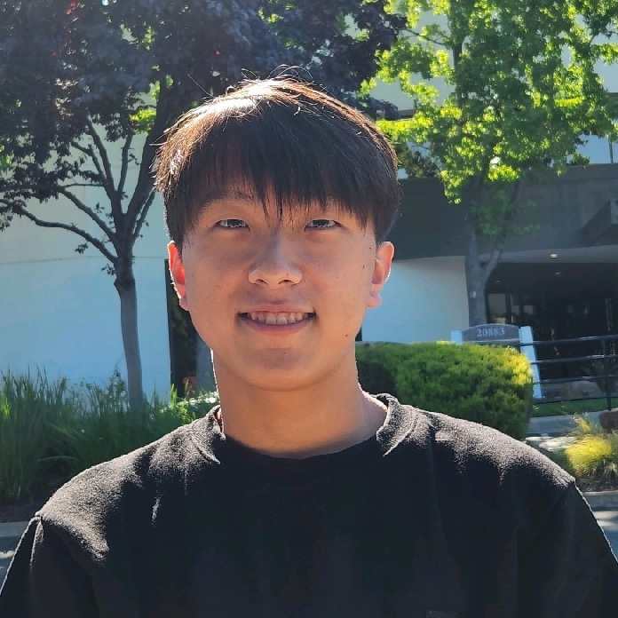

Jisang (Michael) Ahn
“We can only see a short distance ahead, but we can see plenty there that needs to be done.” - Turing
Hi, I'm Michael! I graduated from the University of Michigan in 2026 with a B.S. in Computer Science. I'm interested in AI and Systems. Currently, I'm a software engineer at Google.
At Michigan, I was part of SymbioticLab under professor Mosharaf Chowdhury, working on Distributed Systems for LLM Inference and Energy-Efficient AI.
I love thinking & talking about random things, so if you ever want to chat, feel free to reach out! I check both my email and LinkedIn inbox regularly.

News
- Joined Google as a Software Engineer!
- Graduated from the University of Michigan with a B.S. in Computer Science, High Distinction.
Publications
Cornfigurator: Automated Planning for Any-to-Any Multimodal Model Serving
Cornserve: A Distributed Serving System for Any-to-Any Multimodal Models
Recent Experience
Software Engineer · Google
Cloud AI Infrastructure
Research Assistant · SymbioticLab, University of Michigan
Worked on distributed multimodal model serving and energy-efficient AI.
Software Engineer Intern · Amazon
Worked on Kindle device software (C/C++).
Research Assistant · ISC Lab, University of Michigan
On-device ML for real-time ultrasound activity classification on embedded systems.
Education
University of Michigan
B.S. in Computer Science
Coursework
Operating Systems, Reinforcement Learning, Computer Vision, Machine Learning, Graphics & Generative Models, Deep Learning for Bioinformatics, Embedded Systems, Compilers, Networks, Quantum Computing, Databases, Web Systems, Computational Theory, Data Structures & Algorithms, Intro Computer Architecture, Probability, Linear Algebra, Discrete Math, Multivariable Calculus